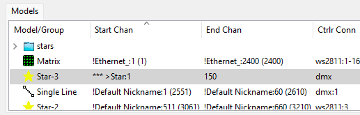

When a models start channel cannot be determined it will appear in the model list on the Layout tab with "***" before the start channel.
There are several reasons why this might happen:
To fix these problems you can either use the visualiser to get them set up correctly or you can just right click on the model list and select "Make All Start Channels Valid". This latter method does not really make things right but instead just moves all the invalid start channels to be no controller which then just gives them a fixed start channel that appears outside the channel range of all defined controllers. You will of course need to correct this to a valid start channel on a controller before you will be able to send data to the model.